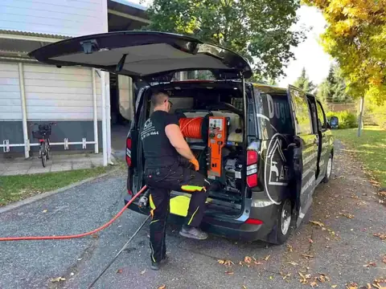
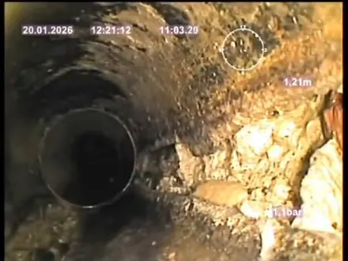
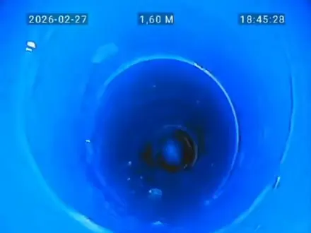
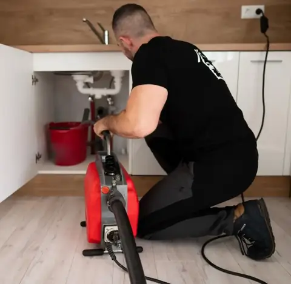

Törött a csatorna? Nem kell feltörni a padlót.
A régi csövet belülről béleljük ki, bontás nélkül. A munka általában egy nap alatt kész, estére már használhatja a lefolyót.


Előtte
UtánaUgyanaz a cső, belülről
Húzza el a csúszkát. Mindkét kép a mi kameránkkal készült a bécsi Club Hotel Cortina fővezetékében: előtte a régi, omladozó cső, utána ugyanez kibélelve.
- Helyszín
- Club Hotel Cortina, Bécs
- Munka
- Fővezeték bélelése, bontás nélkül
- Előtte
- 2026. január 20.
- Utána
- 2026. február 27.
Az Ön csövénél működik?
Nem minden csőhöz a bélelés a jó megoldás. Ezt nem a telefonban döntjük el, hanem kamerával.
Jellemzően jó választás, ha
- repedt, korrodált vagy lerakódásos a cső, de még átjárható
- öntöttvas ejtővezeték egy társasházban vagy régi családi házban
- a cső a padló, a burkolat vagy a kert alatt fut, és a bontás drága lenne
- visszatérő dugulást a csőfal sérülése okoz
Nem ez a megoldás, ha
- a cső teljesen összeroppant vagy elmozdult, és a kamera sem jut át rajta
- a vezeték lejtése rossz: a bélelés a meglévő nyomvonalat követi
Ilyenkor is megmutatom a felvételen, hol a hiba, így csak ott kell bontani.
Így zajlik a bélelés
Egy átlagos szakasz egy munkanap. Este a lefolyó újra használható.
- Kamerás vizsgálatVégigmegyünk a csövön, felvétel és jegyzőkönyv készül. Ebből derül ki, bélelhető-e, és mekkora szakaszt kell kezelni.
- TisztításNagynyomású WOMA-val eltávolítjuk a lerakódást, hogy a bélés a csőfalra tapadjon.
- BélelésEpoxigyantával átitatott béléscsövet húzunk be, ami a régi cső belsejében köt ki.
- Ellenőrző felvételÚjra bekamerázunk, és a felvételt Ön is megkapja, ahogy fent a bécsi munkánál.
Szolgáltatások
Családi házaknak, társasházaknak és cégeknek.

Bártfay Attila
„Nincs csatornahiba, ami kifogna rajtam.”
15 éve dolgozom csatornákkal. A bélelés mellett duguláselhárítással is foglalkozom, így ugyanaz az ember tisztítja, kamerázza és béleli ki a csövet. Győr-Moson-Sopron, Vas, Zala és Veszprém vármegyében, valamint Burgenlandban és Bécsben dolgozom.
A duguláselhárításomról 500 feletti Google-értékelés olvasható.
Kérjen ajánlatot
Ha van fotója a problémáról vagy korábbi kamerás felvétele, csatolja. Ezzel sokszor már a helyszíni bejárás előtt meg tudom mondani, bélelhető-e a cső.
Az ajánlatot a kamerás vizsgálat alapján adom, a szakasz hosszától és átmérőjétől függően. Telefonos tanácsadás ingyenes: +36 30 126 4664
Gyakori kérdések
Mennyi ideig tart a munka?
Általában egy nap. Hosszabb vagy több ágú szakasznál a kamerás vizsgálat után pontosan megmondom.
Kell bontani a falat vagy az udvart?
Nem. A béléscsövet a meglévő csatlakozásokon, tisztítónyíláson vagy aknán keresztül húzzuk be.
Milyen csövekhez jó?
Szinte minden anyagú szennyvíz- és lefolyócsőhöz, DN50 és DN200 közötti átmérőben. Hogy az Ön csöve ilyen-e, azt a kamerás vizsgálat mutatja meg.
Mennyi a garancia?
A bélelésre 5 év garanciát vállalok.
Mennyibe kerül?
A szakasz hosszától, átmérőjétől és a cső állapotától függ, ezért az árat a kamerás vizsgálat után adom meg. Az ajánlatban látni fogja, mi mennyibe kerül.